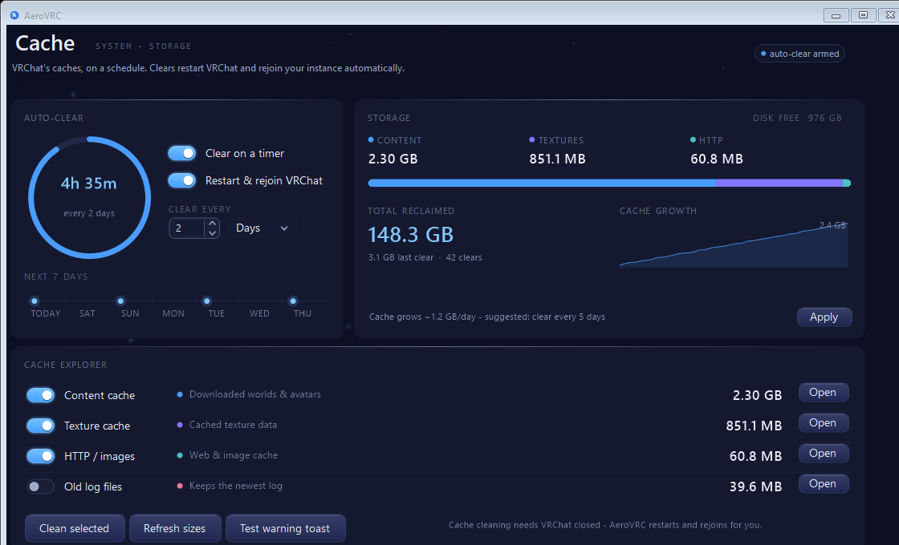

Statistics
Track session uptime, restart counts and how often the watchdog saved you — with goals and history so you can see your setup getting more stable over time.
No more juggling scripts and background tools. AeroVRC pulls your whole VRChat routine into a single app.
Monitors VRChat and relaunches it the moment it crashes or closes unexpectedly. One Panic — Close All button shuts everything down instantly when you’re done.
AeroVRC keeps an eye on VRChat and brings it straight back when it crashes, freezes or closes unexpectedly — with freeze detection, crash-loop protection so it never loops forever, and an optional rejoin-on-restart that drops you back into the instance you were in.
Done for the night? One Panic — Close All button shuts VRChat and your companion apps down instantly.

See your current world and instance, a rolling frame-time graph, and a live Who’s here roster. Copy the instance link or bookmark the world in one click.

Add your OSC tools, trackers and utilities by .exe path or Steam App ID with custom icons. Tick Auto-launch, or group them into one-click presets.

Track session uptime, restart counts and how often the watchdog saved you — with goals and history so you can see your setup getting more stable over time.
Reads your existing VRCX data read-only so your history and friends surface right inside AeroVRC — no duplicate setup, nothing written back.
One-click Windows optimizations for VRChat — disable Game DVR, apply compatibility flags and more, with a plain-English explanation of what each one does.
Star the world you’re in from the dashboard, then rejoin it any time. Paste a vrchat.com share link, a vrchat:// URL or a raw ID and jump straight in.
Browse the VRChat photos you’ve taken in a clean built-in gallery, without digging through folders.
A single, hand-styled dark theme across every page — logs, settings and all — that feels like it belongs next to VRChat, not bolted on.
A rolling look at the app while it’s running — dashboard, performance tools, stats and more.




Live dashboard — world, roster, frame-times and session stats update as you play.
The pieces people rely on most, in a bit more detail.
Performance Mode frees up resources by closing the background apps you list while you play, then reopens them afterwards. Per-world profiles let heavy club and event worlds get their own settings automatically.
One-click Windows optimizations — disabling Game DVR, compatibility flags and more — are each explained in plain English before you apply them, and they’re all standard, reversible options.
Already use VRCX? AeroVRC reads its database read-only so your friends, the people you’ve met and the worlds you’ve visited show up right inside the app — no duplicate setup, and nothing is ever written back to VRCX.
Clear VRChat’s content and texture cache on your own schedule — pick an interval in hours or days and watch the live countdown to the next clear. A heads-up appears ten minutes before it runs.
When a clear is due while you’re in-game, AeroVRC restarts VRChat and rejoins your current instance automatically, so a fresh cache never costs you your spot.